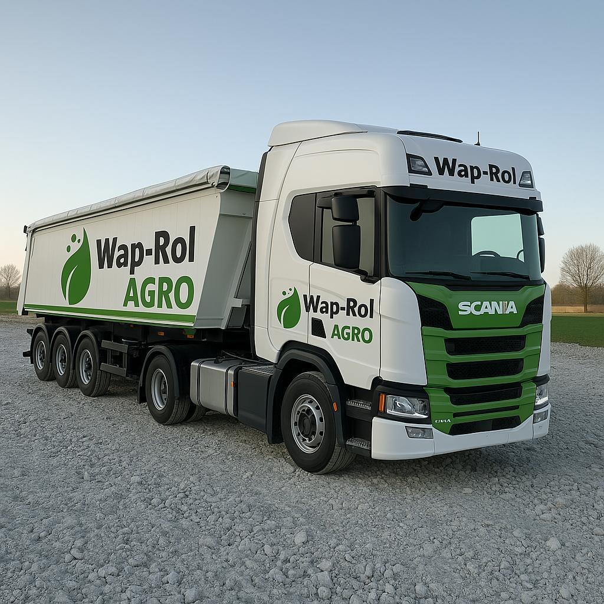
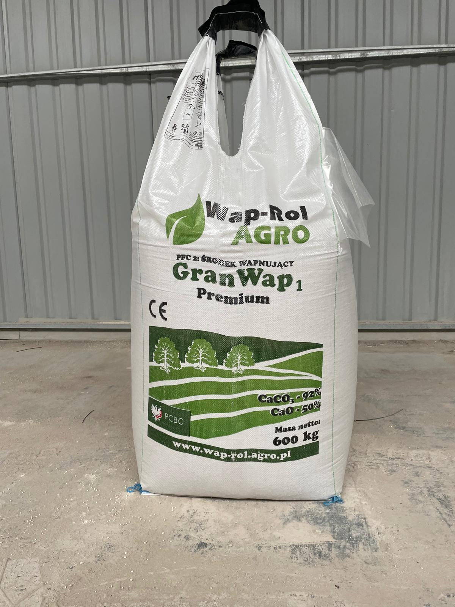
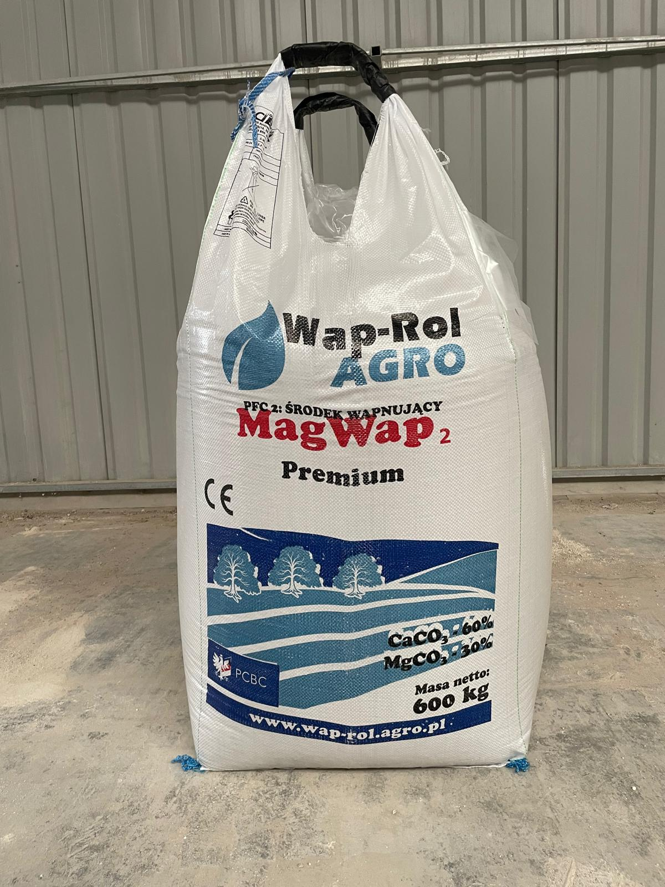
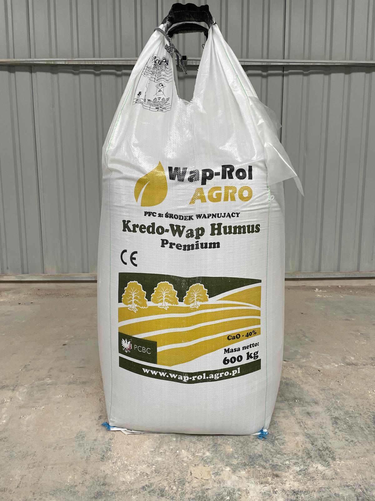

Oferujemy
O firmie
Wap-Rol Agro to producent nawozów wapniowych i magnezowych, który od ponad 12 lat wspiera polskich rolników w poprawie jakości gleb oraz zwiększaniu efektywności upraw. Specjalizujemy się w produkcji wapna granulowanego oraz wapna węglanowo-magnezowego przeznaczonego do skutecznego odkwaszania gleby i stabilizacji jej pH. Naszą misją jest dostarczanie sprawdzonych, wydajnych i bezpiecznych rozwiązań, które stanowią fundament wysokich i stabilnych plonów.

Doświadczenie, jakość i skuteczność
Produkujemy nawozy wapniowe o wysokiej zawartości CaO oraz produkty wzbogacone w magnez, które wspierają prawidłowy rozwój roślin i poprawiają strukturę gleby.
Odpowiednie wapnowanie gleby jest jednym z kluczowych elementów skutecznego nawożenia. Nasze produkty pomagają ograniczyć zakwaszenie, poprawiają strukturę i właściwości fizykochemiczne gleby oraz zwiększają dostępność makro- i mikroelementów dla roślin. Dzięki nowoczesnemu procesowi produkcji zapewniamy wysoką reaktywność i równomierne działanie nawozu. Współpracujemy zarówno z małymi gospodarstwami, jak i dużymi producentami rolnymi, oferując elastyczne warunki współpracy oraz terminowe dostawy.
Stawiamy na długofalowe relacje, rzetelność i realne wsparcie rolników w budowaniu żyznej, zdrowej gleby. Wap-Rol Agro to solidny partner w nowoczesnym i efektywnym rolnictwie.
Lat doświadczenia
Stałych klientów
Główne linie produktowe
Obsługiwanych województw
Produkty
Oferujemy nawozy wapniowe i magnezowe przeznaczone do skutecznego odkwaszania gleby oraz poprawy jej właściwości fizykochemicznych.

GranWap premium
CaO min. 50% • CaCO₃ min. 92%
Składniki: węglan wapnia (CAS 471-34-1), pierwotne surowce i mieszaniny pochodzenia naturalnego.
GranWap Premium to ekologiczny nawóz wapniowy w formie granulatu, produkowany z naturalnych skał wapiennych w procesie nowoczesnej granulacji. Skutecznie i szybko reguluje odczyn gleby, poprawia jej strukturę oraz zwiększa przyswajalność składników pokarmowych.
Dzięki wysokiej reaktywności nawóz efektywnie wnika w strukturę gleby, wspomagając szybkie podniesienie i stabilizację pH. Jednorodna, trwała granula umożliwia precyzyjny i równomierny wysiew, co przekłada się na maksymalną skuteczność działania.
- 90% rozpuszczalność
- Szybka regulacja pH gleby
- Poprawa struktury i aktywności biologicznej gleby
- Precyzyjny wysiew dzięki stabilnej granulacji
- Dopuszczony do stosowania w rolnictwie ekologicznym
Pakowanie: big-bag 600 kg • worek 40 kg
Dawka nawozu GranWap premium (kg/ha)
| Gleba | pH <4.0 | 4.1–4.5 | 4.6–5.0 | 5.1–5.5 | >5.6 |
|---|---|---|---|---|---|
| Bardzo lekkie | 500 | 400 | 200 | 200 | 100 |
| Średnie | 900 | 600 | 500 | 400 | 200 |
| Ciężkie | 900 | 600 | 500 | 400 | 200 |

MagWap premium
CaO min. 37% • MgO 10%
Składniki: węglan wapnia (CAS 471-34-1), węglan magnezu (CAS 546-93-0), pierwotne surowce i mieszaniny pochodzenia naturalnego.
MagWap Premium to ekologiczny nawóz wapniowo-magnezowy w formie granulatu, produkowany z naturalnych skał dolomitowych w procesie nowoczesnej granulacji. Skutecznie reguluje odczyn gleby oraz jednocześnie uzupełnia niedobory magnezu, kluczowego składnika w procesie fotosyntezy i budowie chlorofilu.
Produkt przeznaczony jest do wszystkich typów gleb, w szczególności lekko kwaśnych i ubogich w magnez. Korzystne parametry jakościowe nawozu wspierają tworzenie prawidłowej struktury gleby, poprawiają jej właściwości fizykochemiczne oraz sprzyjają aktywności mikroorganizmów glebowych. Stabilna granula zapewnia równomierny i precyzyjny wysiew.
- Skuteczne odkwaszanie gleby
- Uzupełnienie niedoborów magnezu
- Poprawa struktury i życia biologicznego gleby
- Wysoka reaktywność i równomierne działanie
- Dopuszczony do stosowania w rolnictwie ekologicznym
Pakowanie: big-bag 600 kg • worek 40 kg
Dawka nawozu MagWap premium (kg/ha)
| Gleba | pH <4.0 | 4.1–4.5 | 4.6–5.0 | 5.1–5.5 | >5.6 |
|---|---|---|---|---|---|
| Bardzo lekkie | 600 | 400 | 200 | 200 | 100 |
| Średnie | 900 | 600 | 500 | 400 | 200 |
| Ciężkie | 1200 | 700 | 500 | 500 | 200 |

KREDO-WAP HUMUS
CaO min. 40%
Składniki: węglan wapnia (CAS 471-34-1), pierwotne surowce i mieszaniny pochodzenia naturalnego.
KREDO-WAP HUMUS to ekologiczne wapno nawozowe powstałe z mielenia naturalnej kredy jeziornej – kopaliny towarzyszącej złożom węgla brunatnego. Produkt łączy działanie odkwaszające z właściwościami poprawiającymi strukturę i żyzność gleby.
Głównym składnikiem nawozu jest węglan wapnia (CaCO₃), stanowiący 85–95% suchej masy. Uzupełnienie stanowi naturalny węgiel brunatny, który korzystnie wpływa na właściwości fizyczne gleby – poprawia jej strukturę, zwiększa zdolność zatrzymywania wody oraz wspiera aktywność biologiczną. Kreda jeziorna zawiera również śladowe ilości związków żelaza, potasu, magnezu i fosforu.
- Skuteczne odkwaszanie gleby
- Poprawa struktury i retencji wody
- Wsparcie życia biologicznego gleby
- Naturalne pochodzenie surowca
- Dopuszczony do stosowania w rolnictwie ekologicznym
Pakowanie: big-bag 600 kg
Dawka KREDO-WAP HUMUS (kg/ha)
| Gleba | pH <4.0 | 4.1–4.5 | 4.6–5.0 | 5.1–5.5 | >5.6 |
|---|---|---|---|---|---|
| Bardzo lekkie | 500 | 400 | 200 | 200 | 100 |
| Średnie | 900 | 600 | 500 | 400 | 200 |
| Ciężkie | 900 | 600 | 500 | 400 | 200 |
Zalecana dawka mieści się w przedziale 150–2000 kg/ha, w zależności od zasobności gleby i zaleceń Okręgowej Stacji Chemiczno-Rolniczej.
Wskazane pH gleby dla wybranych upraw
| Uprawa | pH | Uprawa | pH |
|---|---|---|---|
| Brukselka | 6.5–7.5 | Burak cukrowy | 5.8–6.8 |
| Cebula | 6.3–6.7 | Fasola | 6.4–6.7 |
| Kapusta | 6.0–6.8 | Marchew | 6.0–6.7 |
| Ziemniak | 5.5–5.7 | Żyto | 5.0–6.5 |
| Kalafior | 6.5–6.7 | Papryka | 5.2–6.0 |
| Jęczmień | 6.5–7.2 | Chmiel | 6.3–6.5 |
W naszej ofercie dostępne są nawozy granulowane oraz w formie luzem. Gwarantujemy sprawną realizację zamówień – z dostawą naszym transportem na terenie całego kraju lub z możliwością odbioru osobistego.
Galeria
Zdjęcia z realizacji, załadunku oraz naszych produktów w praktyce. Zobacz, jak wygląda współpraca z Wap-Rol Agro.

{kind=link}
{kind=link}
{kind=link}
{kind=link}
{kind=link}
{kind=link}
{kind=link}
Dyplomy i podziękowania
Wspieramy lokalne inicjatywy, wydarzenia oraz przedsięwzięcia społeczne. Angażujemy się w rozwój naszej społeczności, budując trwałe relacje i wspólnie tworząc wartość dla regionu.
{kind=link}
{kind=link}
{kind=link}
Opinie klientów
Zaufanie rolników budujemy poprzez jakość, terminowość dostaw i realne efekty widoczne w polu.
Kontakt
Zapraszamy do kontaktu w sprawie zamówień, dostaw oraz współpracy. Odpowiemy na wszystkie pytania dotyczące naszych produktów.
Nazwa firmy
PRZEDSIĘBIORSTWO PRODUKCYJNO HANDLOWO USŁUGOWE
"WAP-ROL AGRO"
MONIKA KAROLINA KWIETNIEWSKA
Adres siedziby
Kolonia Lisowice 46a
98-355 Działoszyn
woj. łódzkie, Polska
Zakład produkcyjny
Kolonia Lisowice 46a
98-355 Działoszyn
woj. łódzkie, Polska
Wyznacz trasę
Telefon
Dane rejestrowe
NIP: 7722173328
REGON: 592284208
Forma prawna: Osoba fizyczna prowadząca działalność gospodarczą
Rejestr: CEIDG